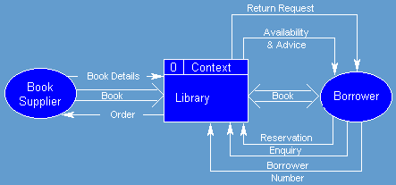

Context Diagram |
CONTEXT DIAGRAM - a logical design tool, used during the analysis phase of the PSM A form of DFD that shows an entire system or organisation in the context of its external entities. It does not show much (if any) details of data flows within the organisation or system. You can tell a context diagram from a DFD because in the context diagram the entire system or organisation is simply shown as a single shape with no details of what's inside it. As one source puts it: "The system under investigation is represented as a single process, connected to external entities by data flows and resource flows. The context diagram clearly shows the interfaces between the system under investigation and the external entities with which it communicates. Therefore, whilst it is often conceptually trivial, a context diagram serves to focus attention on the system boundary and can help in clarifying the precise scope of the analysis." For example, if the library were under investigation, this is how it would look in context:  "Library Context Diagram.
Note, that communications involving external entities are only included where they involve the 'system' process. Whilst a book supplier would communicate with various agencies, for example, publishers and other suppliers - these data flow are remote from the 'system' process and so this is not represented on the context diagram." In other words, flows directly between external entities (e.g. book supplier, customer) do not belong on this system's context diagram. |
Back to the IT Lecture Notes index
Back to the last page you visited
Split off 28 March 2010
Last changed: February 21, 2013 10:49 AM
VCE IT Lecture notes © Mark Kelly 2001-